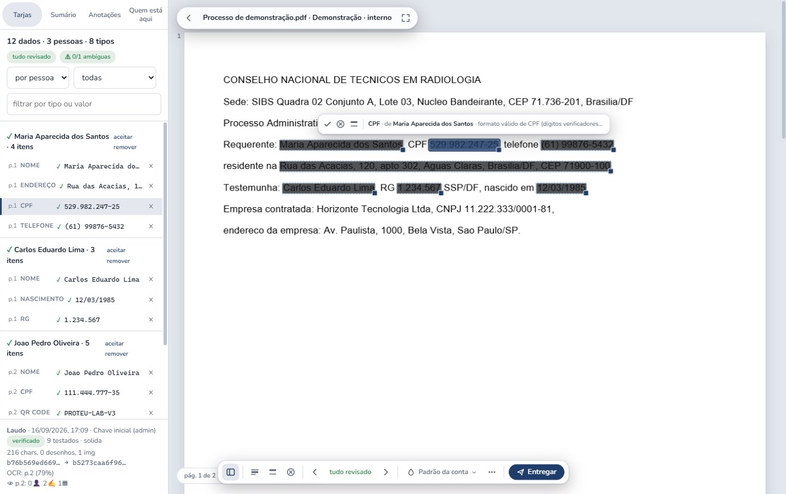
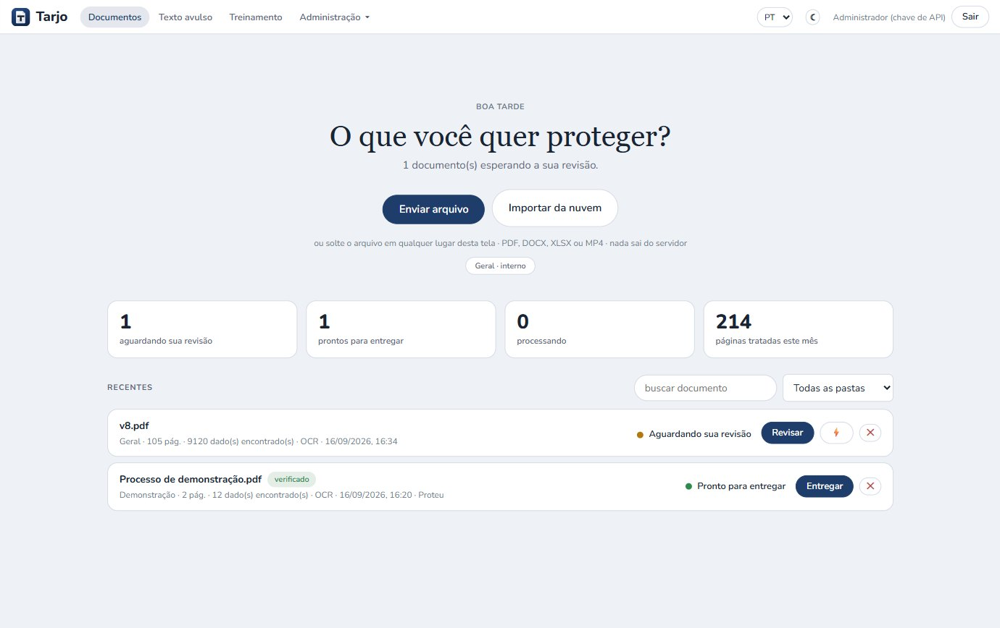
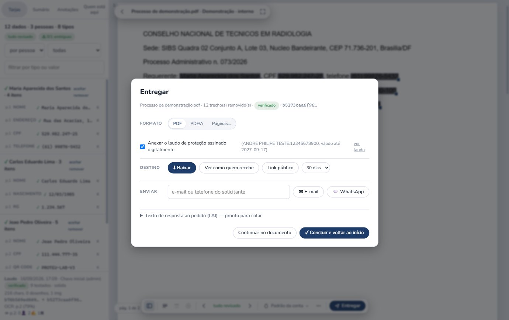

O Tarjo encontra e remove definitivamente dados pessoais em documentos públicos — CPF, nome, endereço, rosto, assinatura, QR Code — e devolve um PDF pesquisável, com laudo verificável e trilha de auditoria. Desenvolvido no Brasil, sem treinar modelo com os seus dados.
Desenvolvido no Brasil · remoção vetorial (não vira imagem) · detecção por contexto em português · roda no servidor do órgão ou em nuvem
Qualquer órgão ou entidade sujeito à LAI e à LGPD pode contratar o Tarjo. Também serve a empresas privadas que respondem a titulares de dados.
Serviço de TIC em nuvem (SaaS) ou instalação no servidor do órgão, pela Lei 14.133/2021:
Em qualquer via, a proposta comercial e a documentação de habilitação saem prontas para o processo.

Sem treinar ninguém por semanas. Quem sabe ler um processo sabe usar o Tarjo.
PDF, DOCX, XLSX ou MP4 — pela tela, pela API, em lote, pela extensão do Chrome ou direto do Drive/OneDrive. Se faltar texto, o OCR entra sozinho. O documento já abre enquanto a detecção roda.
As tarjas chegam propostas, agrupadas por pessoa: "Maria: CPF, telefone, endereço". Cada uma diz por que foi marcada. Você aceita, rejeita ou protege o mesmo dado no documento inteiro com uma tecla.
Um botão remove o conteúdo do arquivo de forma irreversível, verifica por extração de texto e entrega: PDF ou PDF/A, link com validade, e-mail, WhatsApp — com o laudo assinado digitalmente como última página.
Não é mockup. São telas reais do Tarjo em uso.

Revisão — o PDF é a tela. Painel por pessoa à esquerda, a decisão sobre cada tarja (aceitar, não é dado, proteger igual) e o motivo da detecção.

Chegada — uma pergunta e um botão. Solte o arquivo em qualquer lugar da tela.

Entregar — formato, laudo assinado, destino e o texto de resposta ao pedido LAI, num painel só.
Dez verificações objetivas do que o Tarjo faz com um documento: contexto, OCR, imagem, revisão, irreversibilidade, regras, API, desempenho, publicação e lote. Cada botão executa agora, neste servidor, sobre documentos sintéticos — e mostra o resultado com o laudo.
Nenhum documento real é usado. Resultados e arquivos são gerados na hora; V4, V9 e V10 são roteiros guiados (visualizador, proxy de publicação e lote).
Remover é diferente de cobrir. O Tarjo reescreve o arquivo sem o conteúdo tarjado, prova isso por extração de texto e registra tudo — quem, quando, o quê.
Texto, vetores e o trecho da imagem sob a tarja são removidos do PDF. A verificação automática tenta recuperar cada valor e só libera o arquivo quando nada volta.
Hash de entrada e de saída, tarjas por tipo, páginas com OCR, endereços institucionais preservados, quem revisou e quando — assinado com certificado ICP-Brasil (PAdES). Sem certificado, o laudo não é emitido.
Envio, processamento, cada tarja salva, exportação, downloads, links abertos, compartilhamentos, mudanças de regras e de usuários.
Detecção por regras e contexto, modelos de visão fixos, execução local, sem chamadas externas obrigatórias, sem treinamento com os seus documentos. Modelo de linguagem só se o órgão quiser, no próprio servidor. Exportação integral em ZIP a qualquer momento.
Perfis Operador, Gestor e Administrador com permissões finas; senha, código por e-mail, Entra ID, SAML ou LDAP; usuários ilimitados.
O site do órgão continua igual; quem baixa um PDF recebe a versão tarjada. Se o serviço cair, o original nunca é exposto.

O Tarjo foi desenhado a partir do que a lei exige de quem publica documento público — não o contrário.
| Norma | O que exige | Como o Tarjo atende |
|---|---|---|
| LAI — Lei 12.527/2011, art. 7º, §2º | Acesso à parte não sigilosa do documento, com ocultação da parte protegida | Remoção vetorial só do trecho pessoal; o resto fica íntegro e pesquisável |
| LAI, art. 31 · Decreto 7.724/2012, arts. 55–62 | Informação pessoal com acesso restrito por 100 anos, salvo consentimento ou previsão legal | Detecção de CPF, RG, endereço, telefone, nascimento, rosto e assinatura; endereço institucional preservado |
| LGPD — Lei 13.709/2018, arts. 6º, 7º e 23 | Tratamento pelo poder público com finalidade, necessidade e transparência | Regras por órgão, revisão humana registrada, laudo com base legal por documento |
| LGPD, art. 37 | Registro das operações de tratamento | Trilha de auditoria completa e exportável |
| LGPD, art. 46 | Medidas de segurança contra acesso não autorizado | Perfis e SSO, execução no ambiente do órgão, sem treinamento com os dados, hashes de integridade |
| MP 2.200-2/2001 · ICP-Brasil | Validade jurídica de documento assinado digitalmente | Laudo e entrega assinados em PAdES com certificado do órgão |
| Lei 14.133/2021 · IN SGD/ME 94/2022 | Contratação de solução de TIC pela administração | Modelo SaaS ou instalado; contratação por inexigibilidade (art. 74, I) ou dispensa (art. 75, II) |
Preço por franquia de páginas, usuários ilimitados a partir do plano Órgão, tudo incluído. Valores em reais, por mês, com contrato anual.
Excedente só com autorização prévia: R$ 0,04 por página, em pacotes de 25 mil. Pacote Eleição (20 mil páginas por 90 dias) para conselhos e entidades de classe: R$ 3.900.
Leis, decisões e infraestrutura que afetam quem publica, guarda e protege dados no Brasil.
Traga um processo real: a gente tarja na hora, no ambiente de homologação, e você leva o laudo.